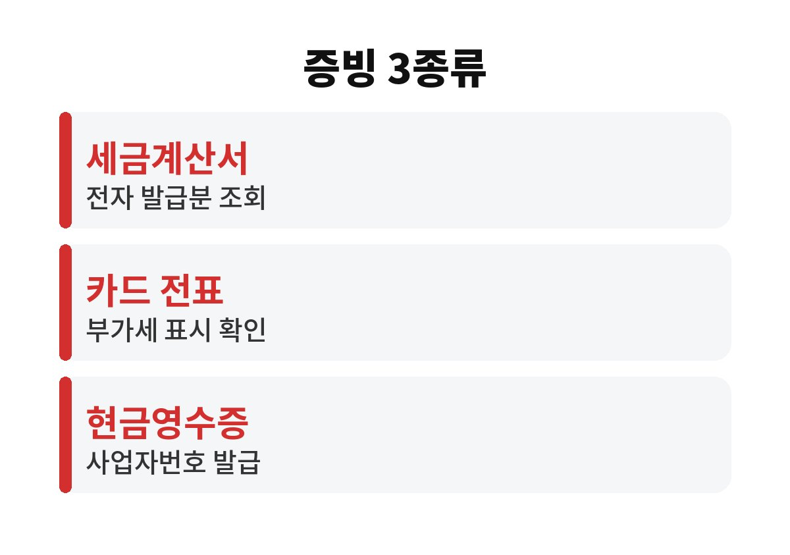
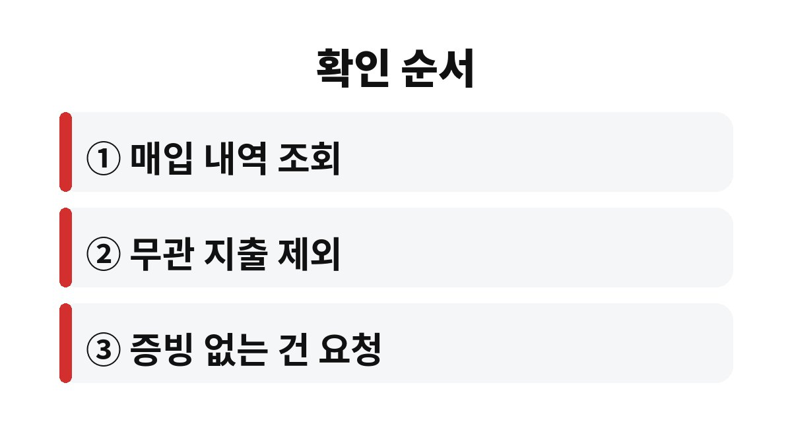

부가세 매입세액 공제는 사업에 쓴 돈의 증빙이 세금계산서, 카드 내역, 현금영수증 중 어디에 남았는지 확인하는 일에서 시작합니다.
2026년 기준 일반과세자라면 공제받을 수 있는 매입이 있는데도 증빙이 비어 있어서 놓치는 경우가 가장 흔합니다.
신고 기간에 허둥대지 않도록 증빙 종류별로 공제가 어떻게 이어지는지 순서대로 정리했습니다.
1월과 7월 신고 직전에 증빙을 한꺼번에 찾기 시작하면 이미 늦은 경우가 많습니다.
포장재를 계좌이체로 사 오고 영수증만 받아 두면 부가세를 냈어도 공제 서류가 되지 않는 경우가 있습니다.
판매자가 세금계산서를 발급하지 않았거나, 발급받았어도 다른 사업자번호가 적혀 있으면 그 금액은 공제 대상에서 빠집니다.
물건값에 포함된 부가세는 분명히 냈는데 신고서에는 한 줄도 반영되지 않는 상황입니다.
사업용 지출을 개인 카드로 결제하면 카드 내역에 사업 건과 생활 건이 섞입니다.
신고 때 어느 것이 사업 지출인지 가려내지 못하면 아예 포기하게 됩니다.
사업자 카드를 따로 쓰는 쪽이 정리가 훨씬 쉽다는 것은 해 보면 바로 느껴집니다.
일반과세자의 매입세액 공제는 사업과 관련된 지출에 대해 증빙이 갖춰져 있을 때 적용됩니다.
아래 표는 증빙 종류별로 공제 가능 여부와 신고 전에 확인할 곳을 나눈 것입니다.
| 증빙 종류 | 공제 여부 | 확인할 곳 |
|---|---|---|
| 전자세금계산서 | 공제 가능 | 홈택스 매입 세금계산서 조회 |
| 신용카드 매출전표 | 사업 관련 지출이면 공제 가능 | 카드 사용내역과 수령명세서 |
| 지출증빙용 현금영수증 | 사업자번호로 받았다면 공제 가능 | 홈택스 현금영수증 조회 |
| 면세 계산서 | 매입세액 자체가 없어 공제 대상 아님 | 부가세 신고서의 면세 매입란 |
| 간이영수증 | 공제 대상 아님 | 경비 처리 가능 여부는 별도 확인 |
표에 있어도 공제가 안 되는 지출이 따로 있습니다.
사업과 직접 관련 없는 지출, 접대비, 개별소비세 과세 대상 승용차의 구입과 유지비가 대표적입니다.
사업자등록 전에 쓴 돈은 공급 시기가 속한 과세기간이 끝난 뒤 20일 안에 등록을 신청했다면 공제를 받을 수 있습니다.


등록하지 않았다고 해서 공제를 못 받는 것은 아닙니다.
다만 등록해 두면 사용내역이 자동으로 조회되어 신고 때 옮겨 적는 수고가 크게 줄어듭니다.
저는 이 편이 신고 날 하루를 아끼는 가장 간단한 방법이라고 생각합니다.
건당 금액이 작은 지출은 증빙을 버리기 쉽습니다.
그러나 한 과세기간에 모이면 몇십만 원이 되는 경우도 있어서, 카드로 결제해 내역을 남겨 두는 편이 낫습니다.
현금으로 낸 소액 지출은 현금영수증 발급 여부를 결제할 때 바로 물어야 나중에 곤란하지 않습니다.
간이과세자는 매입액 전체의 부가세를 공제받지 않고 업종별 부가가치율을 곱한 방식으로 계산합니다.
같은 증빙을 모아도 공제 금액이 일반과세자와 같지 않으니 본인 유형부터 홈택스에서 확인해야 합니다.
다음 신고에서 가장 먼저 할 일은 홈택스에서 매입 세금계산서 목록을 한 번 열어 보는 것입니다.
빠진 증빙이 보이면 판매자에게 발급을 요청하고, 판단이 어려운 지출은 세무서나 세무 대리인에게 묻는 편이 빠릅니다.
참고 자료: 국세청 홈택스 「부가가치세 신고 안내」(2026년 11월 확인)
※ 본 글은 2026년 기준 공개 자료를 바탕으로 정리한 정보이며, 세금·금융 상품 선택은 본인 상황에 맞게 전문가와 확인하시길 바랍니다.